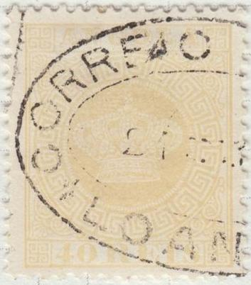
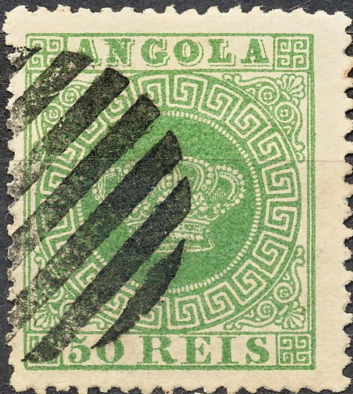

Return To Catalogue - Angola 1894 onwards and miscalleneous - Portugal
Note: on my website many of the
pictures can not be seen! They are of course present in the
catalogue;
contact me if you want to purchase the catalogue.
Angola was a portuguese colony at the southwest coast of Africa (the portuguese made their settlements in the 15th and 16th century). It became independant in 1975. Angola got his name from Ngola (which means king, after the kingdom of Ndongo).
5 r black 10 r yellow 10 r green 20 r brown 20 r red 25 r red 25 r violet 40 r blue 40 r yellow 50 r green 50 r blue 100 r lilac 200 r orange 300 r brown
These stamps have perforation 12 1/2 or 13 1/2. Stamps in similar designs were issued for most Portuguese colonies (country name different for each country), click here for more information on this issue.
Value of the stamps |
|||
vc = very common c = common * = not so common ** = uncommon |
*** = very uncommon R = rare RR = very rare RRR = extremely rare |
||
| Value | Unused | Used | Remarks |
| 5 r | *** | *** | |
| 10 r yellow | *** | *** | Two types: '10' different |
| 10 r green | *** | *** | |
| 20 r brown | ** | ** | |
| 20 r red | *** | *** | |
| 25 r red | *** | ** | |
| 25 r violet | ** | ** | |
| 40 r blue | RR | RR | Two types: '40' different |
| 40 r yellow | *** | *** | |
| 50 r green | R | *** | |
| 50 r blue | *** | ** | Two types: '50' different |
| 100 r | *** | *** | |
| 200 r | *** | *** | |
| 300 r | *** | *** | |
| Reprints | * | - | Reprints exist of all values |
A misprint 40 r red exists (colour of the 20 r) when it was accidently inserted in the 20 r plate, some of these misprints still exist (all cancelled with a blue bar). If anybody posesses a picture of this misprint, please contact me!
Reprints of the above stamps exist (on different paper).
I've seen three commemorative stamps made in 1950 with the Crown design, the bottom tablet with '5 REIS' is different. A label with '1a EXPOSICAO FILATELICA DE ANGOLA' is attached at the bottom. I've seen the values 50 c (with a picture of a 5 REIS green stamp), 1 AGS (with a picture of a 5 REIS red stamp) and 4 AGS (with the above 5 REIS black stamp).
Examples:

Mute cancels

A very neatly applied mute cancel (might be a reprint?).

"CORREIO DE LOANDA"


"BENGUELLA" cancels. One with a leaf pattern at the
bottom and the other with the year.


"AMBRIZ" and "ANGOLA CORREIO DO AMBRIZ"
cancels
The genuine stamps have the following characteristics (thanks to Bill Claghorn and 'The Spud Papers'):
The crown is well done and the pearls can be easily counted.
There are 9, 10, 5, 10, 9 pearls
The inner frame line at the sides is thinner.
The thick line above the value tablet extends all the way to the
outer right vertical frame.
Some forgeries have the typical Spiro cancel never used in Angola, (an easy way to recognize them), examples of Spiro forgeries:

(Inner line above value label not continuous, 'G' has a tail)
The inner line above the value label is not continued to the right outer frame line in the Spiro forgeries. The pearls in the crown are difficult to count. The "G" of "ANGOLA" seems to have a tail in these forgeries. Besides the shown values, I have also seen 50 r green and 100 r lilac. More information on Spiro forgeries of Angola can be found at: http://www.tabacaria.org/Selos/Coroa/angSpiro.htm. Also note the typical forged cancels on these forgeries.
Fournier also made forgeries of these stamps, the 9 values intially issued in 1870 were offered by him for 2 Swiss Francs in his 1914 pricelist. The other 5 values were offered for 1 Swiss Franc. A misprint, 40 r red was also offered by him for 2 Swiss Francs.

(I think this is a Fournier forgery)
(Some forged cancels applied to Fournier forgeries, taken from a
Fournier album)

(Fournier forgeries with "CORREIO DE LOANDA 15/10 1881"
cancel)
More information concerning Fournier forgeries of Angola can be found at: http://www.tabacaria.org/Selos/Coroa/angFournier.htm.
Fournier forgeries.
They can be recognized by the following characteristics; with thanks to Bill Claghorn for the images; (http://geocities.com/claghorn1p/):
(Genuine left, forgery right)
1) The ornaments in the upper right corner are not perfect as in the genuine stamps.
(Genuine left, forgery right)
2) The cross on top of the crown has a white dot in the center. In the Fournier forgeries there is no dot at all in the center, but it has the colour of the stamp.
(Genuine left, forgery right)
3) I have also noticed that the ornament in the left upper corner is almost touching the frame in the Fournier forgeries. In the genuine stamps it is further away from the frame.
4) The cancels always seem to be the same (one or two per country, with the date always fixed). On Angola: "CORREIO ... JASSANG... 23 NOV 75" or "CORREIO DE LOANDA 15/10 1881"

In the above forgery, the ornaments in the upper right and lower left corner are inverted. A picture of a 5 reis forgery (called 'Swastika forgery there) can be found at: http://www.tabacaria.org/Selos/Coroa2/angswastik.htm.
This forgery has the last "A" of "ANGOLA" inclined to the left. More information (including picture) can be found at: http://www.tabacaria.org/Selos/Coroa/angtiltedA.htm.

'A inclinado' forgery

This is forgery no.7 in the book 'Forgeries of Portugal and
Colonies by D.J. Davies, 2002', Published by the Portuguese
Philatelic Society. It has the text "50 REIS" too
small. This book lists 9 forgery types.

5 r black 10 r green 20 r red 25 r lilac 40 r brown 50 r blue 100 r brown 200 r violet 300 r orange
These stamps have perforation 12 1/2 (the values 5 r and 10 r also exist with perforation 13 1/2). Stamps in similar designs were issued for most Portuguese colonies (country name different for each country), click here for more information on this issue.
Value of the stamps |
|||
vc = very common c = common * = not so common ** = uncommon |
*** = very uncommon R = rare RR = very rare RRR = extremely rare |
||
| Value | Unused | Used | Remarks |
| 5 r | * | * | |
| 10 r | ** | * | |
| 20 r | *** | ** | |
| 25 r | ** | * | |
| 40 r | *** | *** | |
| 50 r | ** | * | |
| 100 r | *** | ** | |
| 200 r | *** | *** | |
| 300 r | *** | *** | |
Surcharged with fancy letters (1902)
'65 Reis' on 40 r brown '65 Reis' on 300 r orange '115 Reis' on 10 r green '115 Reis' on 200 r violet '130 Reis' on 50 r blue '130 Reis' on 100 r brown '400 Reis' (red) on 5 r black '400 Reis' on 20 r red '400 Reis' on 25 r lilac
Value of the stamps |
|||
vc = very common c = common * = not so common ** = uncommon |
*** = very uncommon R = rare RR = very rare RRR = extremely rare |
||
| Value | Unused | Used | Remarks |
| 65 r on 40 r | *** | *** | |
| 65 r on 300 r | *** | *** | |
| 115 r on 10 r | *** | *** | |
| 115 r on 200 r | *** | *** | |
| 130 r on 50 r | *** | *** | |
| 130 r on 100 r | *** | *** | |
| 400 r on 5 r | R | R | |
| 400 r on 20 r | RR | R | |
| 400 r on 25 r | *** | *** | |
Surcharged with fancy letters and overprinted 'REPUBLICA' in red (1914)
(Left, with small local; and right with broad
"REPUBLICA" overprint)
'115 Reis' on 10 r green '115 Reis' on 200 r violet '130 Reis' on 50 r blue '130 Reis' on 100 r brown
Value of the stamps |
|||
vc = very common c = common * = not so common ** = uncommon |
*** = very uncommon R = rare RR = very rare RRR = extremely rare |
||
| Value | Unused | Used | Remarks |
| With local small red 'REPUBLICA' overprint | |||
| 115 r on 10 r | *** | ** | |
| 115 r on 200 r | R | R | |
| 130 r on 50 r | R | R | |
| With broad red 'REPUBLICA' overprint | |||
| 115 r on 10 r | * | * | |
| 115 r on 200 r | * | * | |
| 130 r on 100 r | ** | ** | |

2 1/2 r brown
This stamp has perforation 12 1/2 or 13 1/2. Newspaper stamps in this design were issued for most Portuguese colonies (country name different for each country), click here for more information.
Value of the stamps |
|||
vc = very common c = common * = not so common ** = uncommon |
*** = very uncommon R = rare RR = very rare RRR = extremely rare |
||
| Value | Unused | Used | Remarks |
| 2 1/2 r | * | * | |
Surcharged 'CORREIOS DE ANGOLA 25 REIS' (blue) in a circle (1894)

25 r on 2 1/2 r brown
Value of the stamps |
|||
vc = very common c = common * = not so common ** = uncommon |
*** = very uncommon R = rare RR = very rare RRR = extremely rare |
||
| Value | Unused | Used | Remarks |
| 25 r on 2 1/2 r | R | R | Forged overprints exist; I know the forger Fournier made forged overprints. |
Surcharged 400 Reis in fancy letters
(click here for stamps of other colonies with similar surcharge)
'400 Reis' on 2 1/2 r brown
Value of the stamps |
|||
vc = very common c = common * = not so common ** = uncommon |
*** = very uncommon R = rare RR = very rare RRR = extremely rare |
||
| Value | Unused | Used | Remarks |
| 400 r on 2 1/2 r | ** | ** | |
Surcharged 400 Reis in fancy letters and 'REPUBLICA' (red)
'400 Reis' on 2 1/2 r brown
Value of the stamps |
|||
vc = very common c = common * = not so common ** = uncommon |
*** = very uncommon R = rare RR = very rare RRR = extremely rare |
||
| Value | Unused | Used | Remarks |
| 400 r on 2 1/2 r | ** | ** | Local small 'REPUBLICA' overprint |
Surcharged 400 Reis in fancy letters overprinted 'Republica' and value in cents and bars
(click here for stamps of other colonies with similar surcharge)
'40 c.' on 400 r on 2 1/2 r brown
Value of the stamps |
|||
vc = very common c = common * = not so common ** = uncommon |
*** = very uncommon R = rare RR = very rare RRR = extremely rare |
||
| Value | Unused | Used | Remarks |
| 40 c on 400 r on 2 1/2 r | ** | ** | Straight 'Republica' overprint |
The 25 r on 2 1/2 r was forged by Fournier.
(Forged overprint by Fournier, reduced size, taken from a
Fournier album)
Angola 1894 onwards and miscalleneous
Stamps - Briefmarken - Timbres-Poste - Postzegels - Francobolli - Estampillas


{kind=link}
{kind=link}
{kind=link}